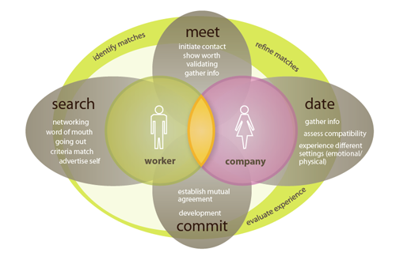
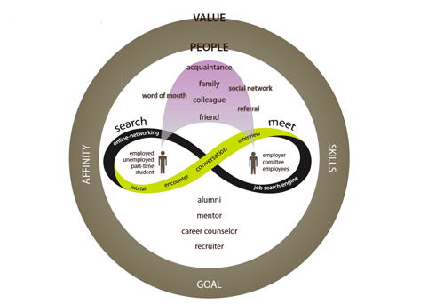
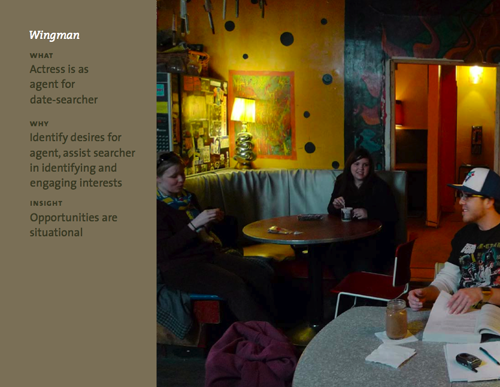
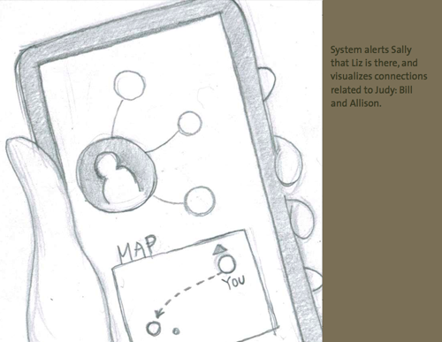

Design an interactive system for the Microsoft Design Challenge that explores New Ways of Working.
We began talking about how to help people find the jobs that make them happiest, and I suggested that we could use dating as a metaphor for this type of job search process.
The group then decided to focus specifically on networking, and I felt that since current networking institutions (job fairs, mixers) often feel a little artificial, we should come up with a more natural way to facilitate meeting interesting people and making useful career connections.
Our "wingman" research idea put a hired actress as the agent of a woman looking to meet guys she might like to date. I talked with the participants afterwards to learn what strategies they used to communicate and find out how the actress was able to get such a good idea of the woman's preferences in such a short time.
Research is finished and we are developing and refining a concept. Our current idea is to create a personal networking tool that incorporates the specific insights we learned from our exploratory and generative research.